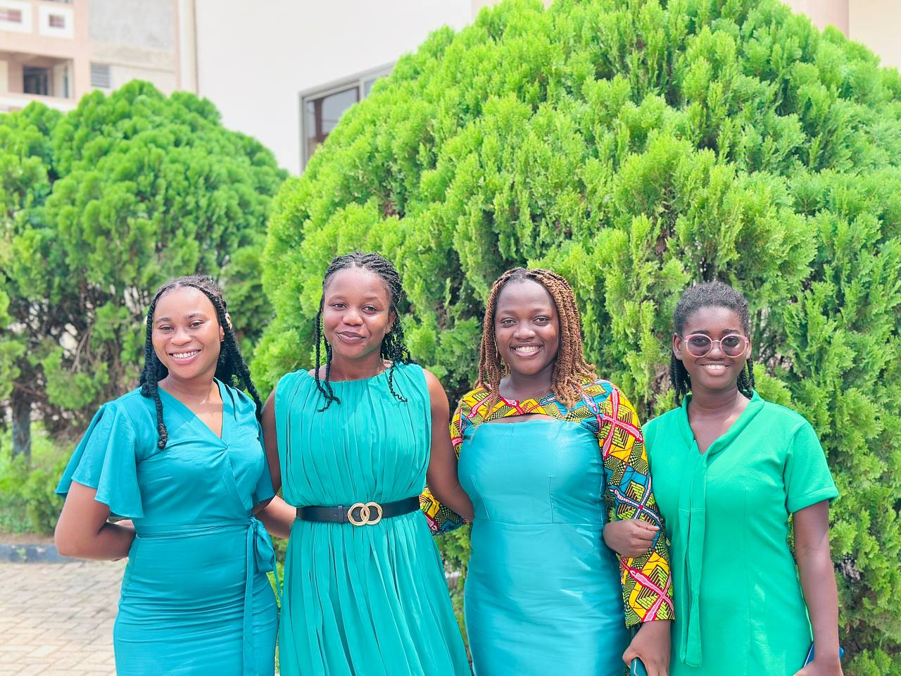
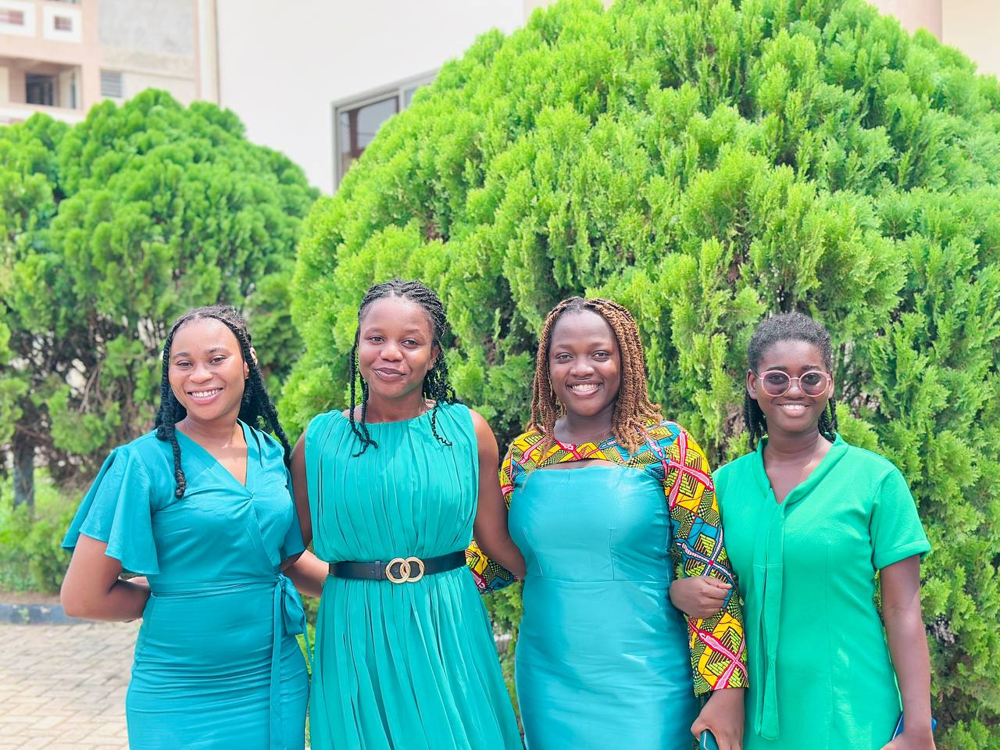

WELCOME TO GNAAS-UMAT
About Us
Welcome to the University of Mines and Technology, Ghana National Association of Adventist Students Chapter GNAAS-UMaT! We are a dynamic community of students dedicated to fostering spiritual growth, academic excellence, and service to others in accordance with the teachings of Jesus Christ.
Our Mission
To glorify God by nurturing a spiritually vibrant and academically empowered community of students who live out the principles of the Seventh-day Adventist faith.
Weekly Worship & Bible Study
Strengthen your faith through engaging discussions and uplifting worship.
Prayer Meetings
Join us as we seek God’s guidance in our personal and academic lives.
Community Service
Participate in outreach programs to impact lives beyond our campus.
Social & Networking Events
Connect with fellow Adventists and build lasting relationships.
Mentorship & Discipleship
Grow in your spiritual and academic journey with the support of experienced mentors.
We welcome all students, whether lifelong Adventists or those simply curious to learn more about our faith. Join us as we grow together in Christ and shine His light on our campus!
Our Leaders
-
 PRES
PRES
Emmanuel Oppong Sarfo
President
-
 VP
VP
Joscelin Gyampong
Vice President (Adminstration)
-
 VP
VP
Sarah Ampadu
Vice President (Program)
-
 SEC
SEC
Blessing Serwaa Duodu
Secretary
-
 SEC
SEC
Elizabeth Teiko
Treasurer
-
 CHAP
CHAP
Pastoor Enoch Assan Donkor
Chaplain
Current Church Population
Current Members
Members
Testimonials
The sermons are always inspiring and thought-provoking. I feel spiritually nourished every time I attend.
I have found a second family here. The fellowship and friendships I have made are invaluable.
As an alumnus, I cherish the values and friendships I gained here. GNAAS-UMaT shaped my faith and leadership for life beyond campus.
Image Gallery
 
